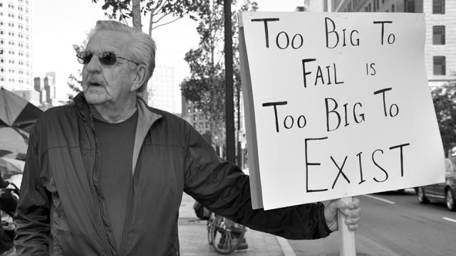
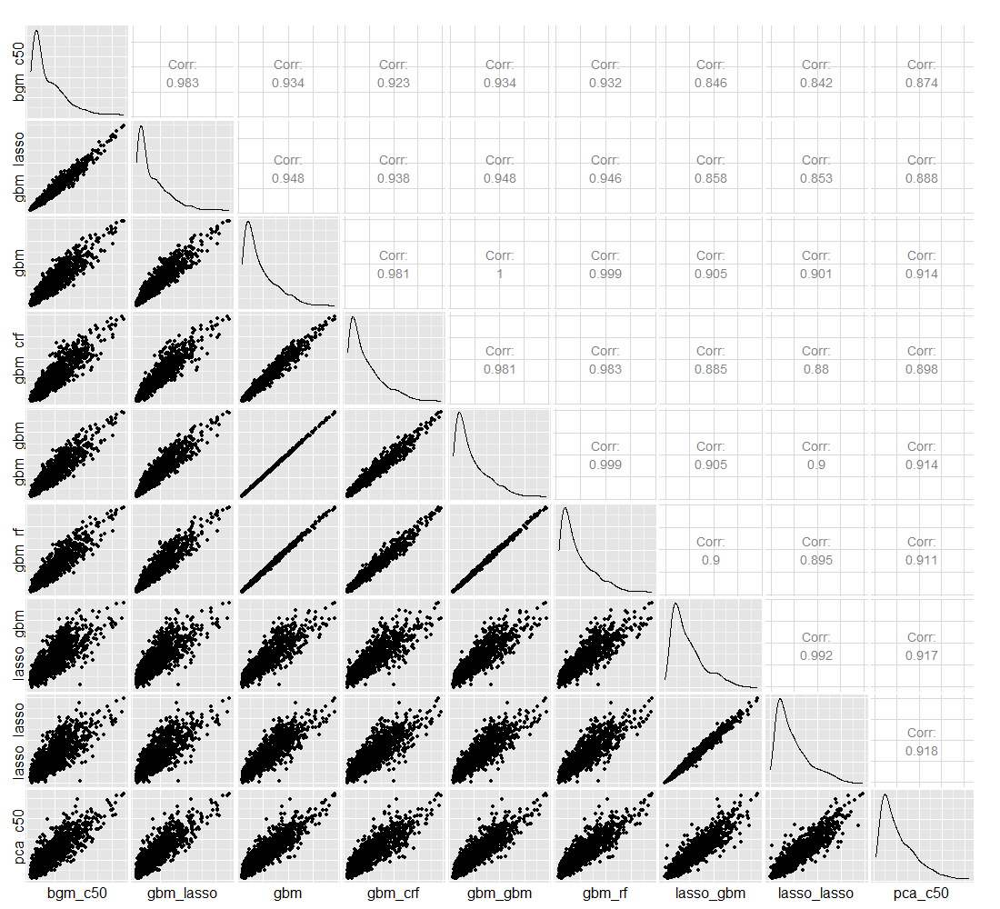
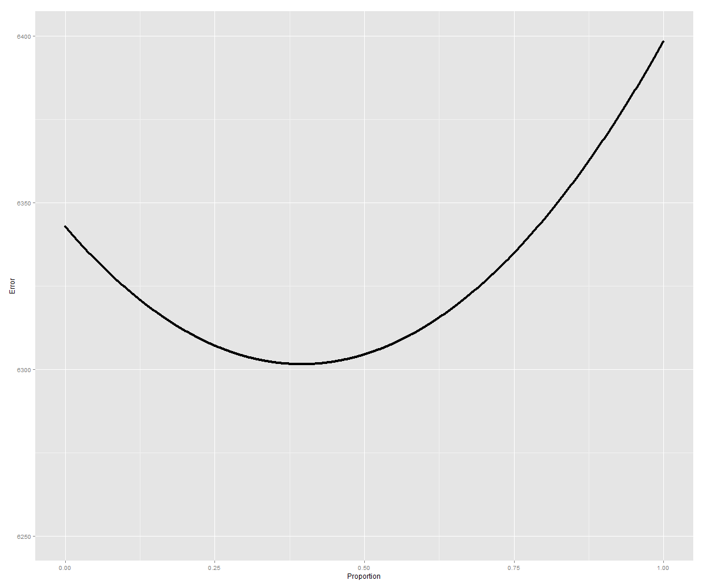

name: inverse layout: true class: center, middle, inverse --- # Our 2015 Data Mining Cup Solution ## Iowa State University Team 1 ### or ## How I Learned to Stop Worrying and Love the Grind .footnote[Our github page: [github.com/imouzon/dmc2015](https://github.com/imouzon/dmc2015)] --- #Iowa #Iowa State University ##and #Our Team --- layout: false .left-column[ ## Iowa ### About Iowa ] .right-column[ <center> <h2> Iowa is in America's Midwest </h2> <img src="www/figs/iowa-skyline.jpg" alt="dmc logo" height="185"> </center> - The largest city, Des Moines, only has a population of about 600,000 - The largest producer of corn, ethanol, and soybeans in the United States - There are more pigs than people in Iowa - It is named after the Iowa river which itself is named after the Native American "Ioway" tribe. - It is the birth place of the actor John Wayne (The Searchers, Red River, ...) ] --- layout: false .left-column[ ## Iowa ### About Iowa ## Iowa State ### The Stats Dept ] .right-column[ <center> <h2> Iowa State Univeristy</h2> </center> - First statistics course offered in 1915 - Department established in 1947 (the first statistics department in the US) - Snedecor Hall built in 1953 ] --- layout: false .left-column[ ## Iowa ### Where is Iowa ### About Iowa ## Iowa State ### The Stats Dept ## Our Team ] .right-column[ <center> <h2> We were able to put together a terrific team </h2> </center> <center> <img src="www/figs/team1.png" alt="ChenPlot" height=320></img> </center> - A result can only be as good as the team that makes it - We had a lot of diverse talent - We met twice weekly to share results - Primary tools: GitHub, R ] --- name: inverse layout: true class: center, middle, inverse --- #Our Approach --- name: inverse layout: true class: center, middle, inverse --- #The First 10 Days --- layout: false .left-column[ ## First 10 Days ### Find Structure ] .right-column[ ##The Data Didn't Just Appear Randomly - There must be some **structure** underlying it - There must be some **unit** generating it in the context of the structure **Here's an analogy**: - The tracks the structure - The train is the unit, whose future position is uncertain but constrained by the tracks <center> <img src="http://33.media.tumblr.com/11db69e7cd1e1283dc195e8d60e443ec/tumblr_inline_nlkv5eNmcw1r4j8j1.gif" alt="buster" height=240></img> </center> ] --- .left-column[ ## First 10 Days ### Find Structure ] .right-column[ <center> <h2>Coupons Expire</h2> </img> </center> - Batches of coupons are sent every Monday at 11:59 p.m. - They keep the same coupons for one week - After that week has passed, they can not use the coupons anymore and instead have three new coupons. ] --- .left-column[ ## First 10 Days ### Find Structure ### Using structure ] .right-column[ ## The Structure Matters - We can examine how the customers (the units) behave in this structure of coupon delivery and expiration <center> </img> </center> - This structure is important - customers who receive coupons early and shop quickly are more likely to use them. ] --- name: lossfunc layout: true class: center, middle, lossfunc --- # Dealing with Loss <br><br> $$ E = \\sum\_\{i=1\}^\{n\}\\Biggl\[ \\left\(\\frac\{u\_\{i\} - \\widehat\{u\}\_\{i\}\}\{\\frac\{1\}\{n\}\\sum\_\{i=1\}^\{n\}u\_\{i\}\}\\right\)^\{2\} + \\left\(\\frac\{v\_\{i\} - \\widehat\{v\}\_\{i\}\}\{\\frac\{1\}\{n\}\\sum\_\{i=1\}^\{n\}v\_\{i\}\}\\right\)^\{2\} + \\left\(\\frac\{w\_\{i\} - \\widehat\{w\}\_\{i\}\}\{\\frac\{1\}\{n\}\\sum\_\{i=1\}^\{n\}w\_\{i\}\}\\right\)^\{2\} + \\left\(\\frac\{b\_\{i\} - \\widehat\{b\}\_\{i\}\}\{\\frac\{1\}\{n\}\\sum\_\{i=1\}^\{n\}b\_\{i\}\}\\right\)^\{2\} \\Biggr\] $$ --- layout: false ## The Loss Function Is Weird The basic piece of the loss function is $$ \\sum\_\{i=1\}^\{n\} \\left\(\\frac\{x\_\{i\} - \\widehat\{x\}\_\{i\}\}\{\\bar\{x\}\} \\right\)^\{2\} $$ - We get punished for for missing in either direction - We get punished for more as the more we miss by - we get punished more if the mean response is low We have to predict the mean response too! Consider `basketValue`: <center> <img src="www/figs/basketFreq.png" alt="orderFast" height=120></img> </center> There are some enormous values in there - how should that impact our prediction? --- layout: false <center> <h1> Error and <TT>basketValue</TT> </h1> </center> <center> <img src="www/figs/basketValue.png" alt="orderFast" height=140></img> </center> - **Possible Scenarios:** True Value Contributes to **LOSS** and **WEIGHT** | | True basketValue <br> is huge| True basketValue <br> is NOT huge | |--------------------------|:-------------------:|:-----------------------:| | **Prediction is huge** | Small Error<br> Huge Mean | **Huge Error** <br> **Small Mean** | | **Predict is small** | Huge Error<br> Huge Mean | Small Error<br> Small Mean | - Obviously, we are never better off making incorrect predictions - *But* we could lose the entire competition just by making one mistake in basketValue --- name: inverse layout: true class: center, middle, inverse --- #Decision <br><br> ## Use exponential tools that restrict prediction size --- layout: true class: center, middle --- #We were off to a good start ## We had an good grasp of the data structure ## We had an intuitive feel for the loss function ## We had a lot of time left to find the important features --- name: inverse layout: true class: center, middle, inverse --- #We Just Needed Was a Simple Set of Features --- layout: false <center> <img src="http://3.bp.blogspot.com/-u6MZBWbGcZI/UT4mft01YTI/AAAAAAAADpU/JubGsyGdL00/s1600/failure.png" alt="ChenPlot" height=220></img> #Nothing Else We Did Worked </center> <br> ##We had nothing working for us at all - Attempts to uncover the base value of the coupons: **failed** - Attempts to fit a statistical model to user behavior: **failed** - Attempts to exploit data "oddities": **failed** ##There was just no clever way to unlock the data --- name: iastatered layout: true class: center, middle, iastatered --- ####We just had to work a little harder --- name: iastateyel layout: true class: center, middle, iastateyel --- # No small set of clever features exists? # Make a BIG Set of Features and Reduce! --- layout: false class: center, middle <center> <h1> A Feature Matrix Can Get Too Big </h1>  <h1> And The Features Still Need to Be Useful </h1> </center> --- layout: false <center> <h1> We needed good general methods </h1> <img src="www/figs/knifetool.jpg" alt="dmc logo" height="150"> </center> - Give up trying to find clever features use best tools to chip away - Use structure and meaning to find aspects of the data structure - **LLR**: likelihood a coupon is used examined through different filters - **tf-idf**: measure similarity of a trio of coupons <center> <h2> Lots of Features Means Lots of Rules</h2> </center> - Historical data sets used to provide background data - Train on one set, validate all methods on common set --- <center> </center> ## Reduce features by selection Once we had applied these general methods we had another problem: almost 1000 columns in feature matrix. - Hundreds of features based on LLRs and tf-idf - Most features are only weakly related to response - Needed an easy way to select strongest features. --- # Reducing the Features ## Use Methods That Identify Important Features Many machine techniques have importance criteria to help identify usefule features. Iteratively run on subsets of data, these can help us reduce the size of our feature matrix: - Random forest found 305 important features - C5.0 found 83 - adaboost found 105 - Lasso (**l**east **a**bsolute **s**hrinkage and **s**election **o**perator) chose 78 These featues made up our final feature matrix --- #Log Likelihood Ratio Statistics With just historical data, we can calculate the log likelihood ratio that any coupon will be used as: $$ \\text\{LLR\} = \\log\\left\(\\frac\{ \\sum u_i + \\epsilon_1 \}\{ n - \\sum u_i + \\epsilon_2 \} \\right\) $$ ### But we can also consider the LLR for *specific* subsets of coupons. For instance if we calculate the value above for coupons by brand, then we have *numeric* values comparing brands based on whether they are more or less likely to be used. The combinations are almost endless: - LLRs on reward, user, ... - LLRs on rewardXuser, ... - LLRs on rewardXuserXbrand, ... --- name: inverse layout: true class: center, middle, inverse --- # Final Predictions --- layout: false #Putting Predictor Together - We had several methods to select variables and we have several options for prediction - Combining these gave us a lot of prediction methods to work with <center>  </center> --- #Putting Predictor Together Combining predictors leads to the best final prediction <center>  </center>